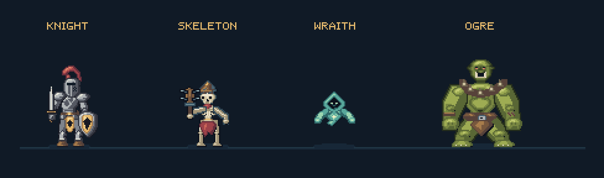
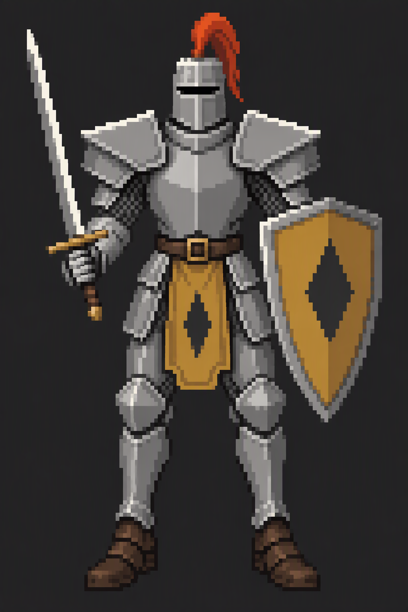
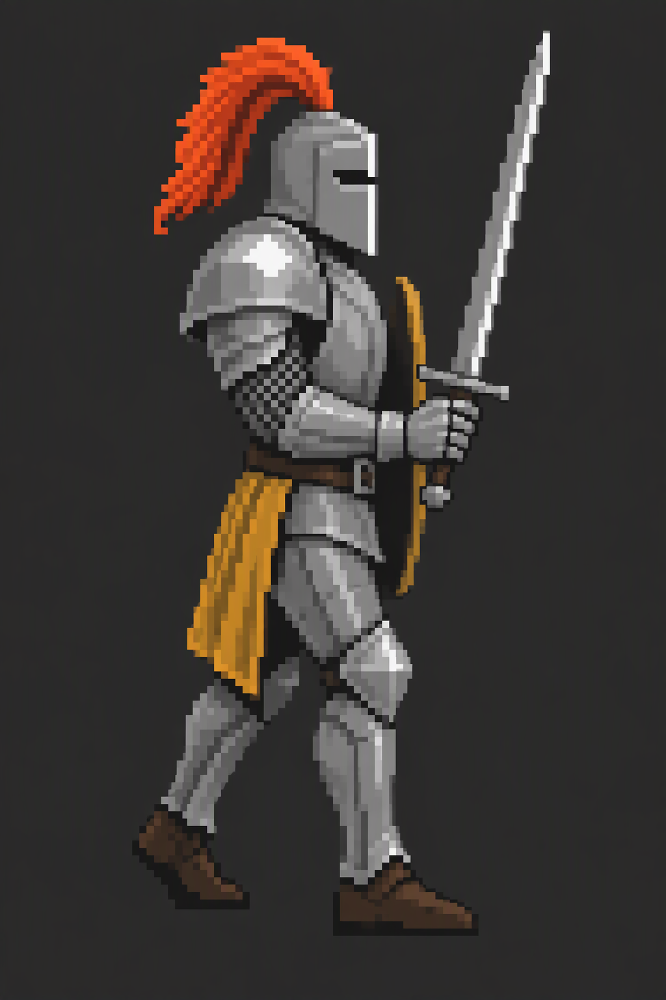
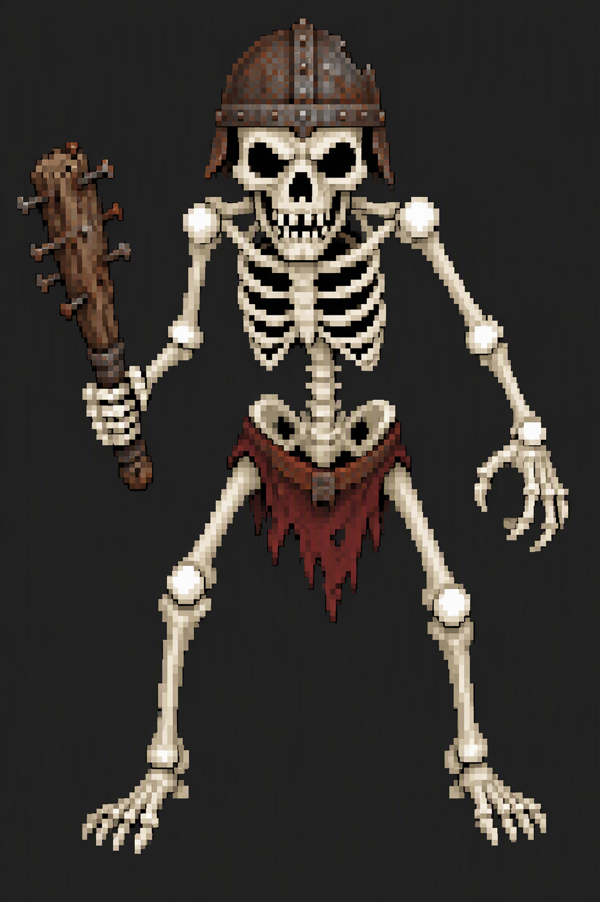
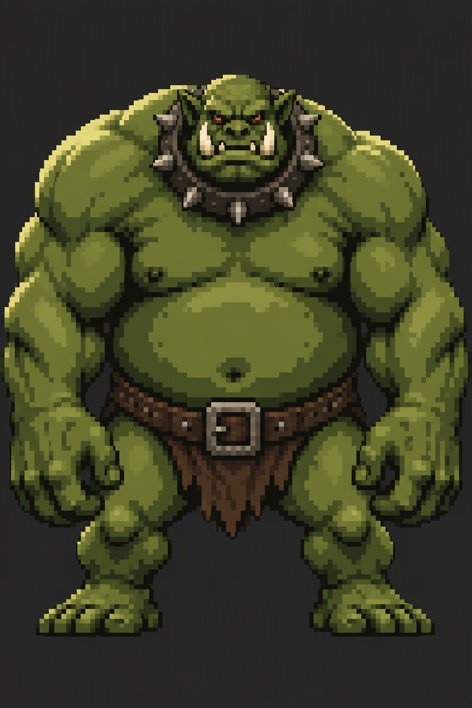

← Animation atelierCharacter design references
These reference images came from the user's local asset folder. Their silhouettes and materials informed the game-scale pixel drawings, which were authored through Aseprite MCP. They are not used as resized game sprites.
Game artwork

Local reference images

Great helm, red plume, pauldrons, gold tabard, lozenge shield and leather boots.
Helmet profile, layered arm armour, sword silhouette and planted feet.
Ivory skull, rusted helmet, exposed ribs, torn cloth and spiked wooden club.
Broad shoulders, olive skin, tusked jaw, spiked collar and heavy fists.Original filenames: ref-knight-front_1792722728153_4e21be06.png; ref-knight-side_1792722922494_176194d6.png; ref-skeleton_1792723805495_26e0edf7.png; ref-ogre_1792723832021_465f219d.png. Found under C:/Isprite Asset/vibe_images. The hooded wraith is an additional design for the caster role.